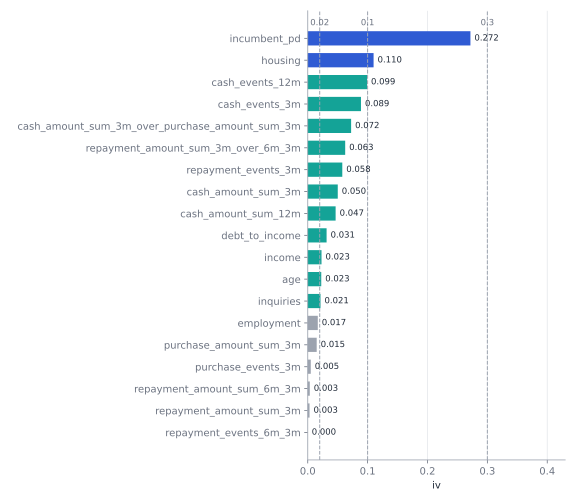

2. 交易流水特征#
申请人在贷款机构开有活期账户，账户上的交易显示了每位申请人在申请之前如何打理资金。本章为申请标注日期，用特征方案按每笔申请的日期从交易中计算特征，检查之后的交易没有混入其中，把它们与 数据与样本 中的候选变量一起分析，并为评分系统保存它们的定义； 时间窗特征 解释了每一步。
前面各章的代码
>>> import numpy as np
>>> import pandas as pd
>>> from kivi.datasets import make_applications
>>> applications = make_applications(n_applicants=40000, rng=0)
>>> months = pd.period_range("2024-01", periods=12, freq="M")
>>> applications["month"] = months[np.arange(40000) * 12 // 40000]
>>> eligible = applications[~applications["policy_decline"]]
>>> accepts = eligible[eligible["approved"]]
>>> development = accepts[accepts["month"] <= "2024-09"]
>>> features = ["age", "income", "debt_to_income", "inquiries", "housing", "employment", "incumbent_pd"]
为申请标注日期#
特征的窗口截止于申请日期，但 数据与样本 只为每笔申请给出了月份。每个月的申请按行的顺序均匀分布在该月的各天： position 是一行在其所在月份中的位置，从 0 起，小于 1：
>>> position = np.arange(40000) * 12 % 40000 / 40000
>>> days = np.floor(position * applications["month"].dt.days_in_month)
>>> start = applications["month"].dt.start_time
>>> applications["application_date"] = start + pd.to_timedelta(days, unit="D")
>>> applications.loc[[0, 3333, 3334, 39999], ["month", "application_date"]]
month application_date
0 2024-01 2024-01-01
3333 2024-01 2024-01-31
3334 2024-02 2024-02-01
39999 2024-12 2024-12-31
这些日期保持 数据与样本 中的月份不变，因此各样本也保持不变。
模拟交易流水#
为了这个项目，贷款机构提取了申请人账户上的交易：银行卡消费、取现和分期还款，时间从每笔申请之前一年到申请之后三个月。 make_transactions() 模拟这些交易。它根据每位申请人的一个任何贷款机构都看不到的风险因子生成交易，因此模拟时读取用 include_risk=True 生成的同一批申请，该参数把这个因子添加为 risk 列；项目的各个步骤从不使用它。第一次调用给出每笔申请之前的一年，第二次调用给出以申请三个月后的日期为终点的三个月。从较短月份的月末往回数，这三个月可能从月末申请的前一两天开始：11 月 30 日的三个月后是 2 月 28 日，再往前三个月是 11 月 28 日。因此用一个筛选只保留第二次调用中申请日期当天及之后的交易：
>>> from kivi.datasets import make_transactions
>>> simulated = make_applications(n_applicants=40000, include_risk=True, rng=0)
>>> simulated["application_date"] = applications["application_date"]
>>> before = make_transactions(simulated, application_date="application_date", rng=0)
>>> later = simulated["application_date"] + pd.DateOffset(months=3)
>>> after = make_transactions(simulated, application_date=later, n_months=3, rng=1)
>>> after = after[after["timestamp"] >= after["applicant_id"].map(simulated["application_date"])]
>>> extract = pd.concat([before, after]).sort_values(["applicant_id", "timestamp"], ignore_index=True)
>>> extract.head()
applicant_id timestamp amount kind merchant_category
0 0 2023-01-05 12:52:45 60.01 purchase online
1 0 2023-01-05 22:29:20 113.02 purchase online
2 0 2023-01-10 08:59:08 664.73 repayment NaN
3 0 2023-01-13 13:54:59 87.74 purchase health
4 0 2023-01-26 22:03:14 352.16 purchase grocery
applicant_id 是申请的索引标签。提取的数据共有 220 万笔交易，其中一半以上是消费。
定义特征#
一个 FeatureSpec 保存特征的定义：申请人列、申请日期列，以及每类交易一组时间窗特征，每组包含一次 window_features() 调用的参数。这些组统计最近三个月和十二个月取现的笔数与金额、最近三个月及其之前三个月还款的笔数与金额，以及最近三个月消费的笔数与金额。两个比率分别比较取现与消费，以及最近三个月与此前三个月的还款：
>>> from kivi.features import FeatureSpec
>>> feature_spec = FeatureSpec(
... id="applicant_id",
... observation_time="application_date",
... events=[
... {"table": "cash", "prefix": "cash_", "time": "timestamp", "windows": ["3M", "12M"],
... "aggregations": {"amount": ["sum"]}},
... {"table": "repayments", "prefix": "repayment_", "time": "timestamp",
... "windows": ["3M", ("6M", "3M")], "aggregations": {"amount": ["sum"]}},
... {"table": "purchases", "prefix": "purchase_", "time": "timestamp", "windows": ["3M"],
... "aggregations": {"amount": ["sum"]}},
... ],
... ratios=[
... ("cash_amount_sum_3m", "purchase_amount_sum_3m"),
... ("repayment_amount_sum_3m", "repayment_amount_sum_6m_3m"),
... ],
... )
>>> list(feature_spec.columns)
['cash_events_3m', 'cash_amount_sum_3m', 'cash_events_12m', 'cash_amount_sum_12m',
'repayment_events_3m', 'repayment_amount_sum_3m', 'repayment_events_6m_3m',
'repayment_amount_sum_6m_3m', 'purchase_events_3m', 'purchase_amount_sum_3m',
'cash_amount_sum_3m_over_purchase_amount_sum_3m', 'repayment_amount_sum_3m_over_6m_3m']
观察是申请人及其申请日期，使用申请的索引。 compute() 按表名接收每组的交易，因此用一个小函数按类型拆分提取的数据：
>>> observations = pd.DataFrame(
... {"applicant_id": applications.index, "application_date": applications["application_date"]},
... index=applications.index,
... )
>>> def by_kind(transactions):
... kind = transactions["kind"]
... return {
... "cash": transactions[kind == "cash_withdrawal"],
... "repayments": transactions[kind == "repayment"],
... "purchases": transactions[kind == "purchase"],
... }
>>> account_features = feature_spec.compute(observations, events=by_kind(extract))
>>> account_features.head(3).T.round(2)
0 1 2
cash_events_3m 4.00 1.00 5.00
cash_amount_sum_3m 596.36 65.84 683.87
cash_events_12m 13.00 5.00 16.00
cash_amount_sum_12m 1754.90 335.42 1891.98
repayment_events_3m 2.00 3.00 0.00
repayment_amount_sum_3m 1214.41 5097.31 0.00
repayment_events_6m_3m 2.00 3.00 2.00
repayment_amount_sum_6m_3m 1211.13 5194.59 1917.27
purchase_events_3m 13.00 12.00 1.00
purchase_amount_sum_3m 2781.96 2082.14 112.82
cash_amount_sum_3m_over_purchase_amount_sum_3m 0.21 0.03 6.06
repayment_amount_sum_3m_over_6m_3m 1.00 0.98 0.00
第三位申请人在最近三个月之前的三个月里还款两次，此后再未还款，同时取现五次，刷卡消费很少。其还款比率为 0，取现金额是消费金额的六倍。
检查特征是否时点正确#
提取的数据中有五分之一发生在其申请人的申请日期当天或之后。评分系统在审批申请时不可能看到这些交易：
>>> date = extract["applicant_id"].map(applications["application_date"])
>>> print(f"{(extract['timestamp'] >= date).mean():.3f}")
0.212
窗口在申请日期之前截止，因此这些交易不计入任何特征。为了检查这一点，手工删除这些交易，再计算一次特征。结果相同：笔数完全相同，金额只在最后几位有舍入差异，因为行数较少的表以另一种顺序累加同样的金额：
>>> known = extract[extract["timestamp"] < date]
>>> np.allclose(
... feature_spec.compute(observations, events=by_kind(known)), account_features, equal_nan=True
... )
True
如果不看日期、手工按申请人分组统计交易，就会把这些交易计算在内，在此基础上开发的模型会依据它在生产中永远得不到的信息为申请人排序。
分析特征#
这些特征与申请表上的字段一样是候选变量。 profile_table() 在开发样本上把它们与 数据与样本 中的七个候选变量一起分析：
>>> from kivi.univariate import profile_table
>>> candidates = pd.concat([development[features], account_features.loc[development.index]], axis=1)
>>> profile = profile_table(candidates, development["target"])
>>> profile[["missing_share", "iv", "gini"]].sort_values("iv", ascending=False).round(3)
missing_share iv gini
variable
incumbent_pd 0.000 0.272 0.295
housing 0.000 0.110 NaN
cash_events_12m 0.000 0.099 0.183
cash_events_3m 0.000 0.089 0.176
cash_amount_sum_3m_over_purchase_amount_sum_3m 0.010 0.072 0.162
repayment_amount_sum_3m_over_6m_3m 0.001 0.063 -0.138
repayment_events_3m 0.000 0.058 -0.123
cash_amount_sum_3m 0.000 0.050 0.139
cash_amount_sum_12m 0.000 0.047 0.124
debt_to_income 0.000 0.031 0.101
income 0.000 0.023 -0.085
age 0.000 0.023 -0.088
inquiries 0.000 0.021 0.101
employment 0.000 0.017 NaN
purchase_amount_sum_3m 0.000 0.015 -0.054
purchase_events_3m 0.000 0.005 -0.027
repayment_amount_sum_6m_3m 0.000 0.003 0.017
repayment_amount_sum_3m 0.000 0.003 -0.034
repayment_events_6m_3m 0.000 0.000 -0.050
>>> list(profile.index[profile["tied_bins"]])
['inquiries', 'cash_events_3m', 'cash_amount_sum_3m', 'repayment_events_3m',
'repayment_events_6m_3m', 'cash_amount_sum_3m_over_purchase_amount_sum_3m']

开发样本上各候选变量快速分箱的 IV。取现和还款的变化比申请表上的大多数字段更强。#
概况把交易流水特征与申请数据放在一起排序：
取现的信息最多：最近十二个月和三个月的取现次数的 IV 分别为 0.099 和 0.089，高于申请表上除
housing以外的所有字段。取现越多违约越多，正的gini表明了这一点。还款重要的是变化，而不是水平。最近三个月和此前三个月的还款金额单独来看都很弱，因为它们取决于分期款的大小；但两者之比的 IV 为 0.063，
gini为负：最近还款比此前少的申请人违约更多。最近三个月还款次数较少的申请人也是如此。消费几乎没有信息。
最近三个月没有消费的 1% 申请人，其取现与消费之比缺失，因为分母为 0。概况把他们单独作为一组。
有五个交易流水特征在
tied_bins中被标记，与 数据与样本 中的inquiries一样：三个月内的取现和还款次数只取少数几个值，而且五分之一的申请人在最近三个月没有取现，因此它们的等频分箱会塌缩。分箱时要为它们指定边界。
模拟核对
make_transactions() 根据隐藏的风险因子生成交易，而供应商的评分卡只看到这个因子的一部分。最近一年的取现比供应商的 PD 更紧密地跟随这个因子，并且与供应商的 PD 只有部分共同的变化，这正是它们带有供应商 PD 所缺少的信息的原因：
>>> simulated[["risk", "incumbent_pd"]].join(account_features["cash_events_12m"]).corr().round(2)
risk incumbent_pd cash_events_12m
risk 1.00 0.44 0.67
incumbent_pd 0.44 1.00 0.53
cash_events_12m 0.67 0.53 1.00
保存特征方案#
特征方案只保存定义：其中没有任何从数据拟合的内容。 to_json() 把它写成 JSON 供评分系统使用， from_json() 将其读回为相等的特征方案，计算出相同的特征：
>>> text = feature_spec.to_json(indent=2)
>>> restored = FeatureSpec.from_json(text)
>>> restored == feature_spec
True
>>> restored.compute(observations, events=by_kind(extract)).equals(account_features)
True
每组都写出其调用的所有参数，包括默认值，因此文件写明了窗口、聚合方式以及每个窗口在哪一侧闭合：
>>> import json
>>> print(json.dumps(restored.to_dict()["events"][0]))
{"table": "cash", "time": "timestamp", "windows": ["3M", "12M"],
"aggregations": {"amount": ["sum"]}, "closed": "left", "prefix": "cash_"}
留给下一版评分卡#
有几个交易流水特征比申请表上的大多数字段更强，但项目按最初的设定，用申请数据和供应商的 PD 构建第一张评分卡。只有当评分系统能像开发时一样计算一个变量时，评分卡才能依赖它，因此贷款机构先在生产中运行这个特征方案（就像 投产与监控 对分箱方案所做的那样），再在下一次开发的挑战者评分卡中检验这些特征。它们与供应商的 PD 部分重复，能否在其之外增加信息，要由那个模型回答，而不是由概况回答。后面各章使用 数据与样本 中的七个候选变量。